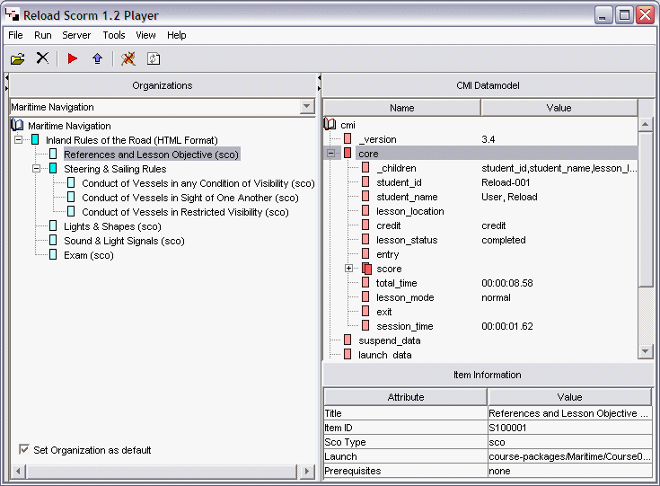
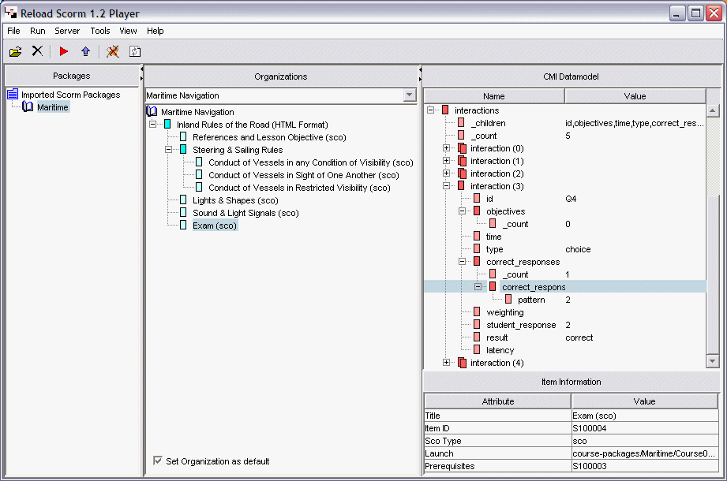

The CMI DataModel
Now go back to the RELOAD SCORM 1.2 Player Workspace (and close your web browser window - you should do this whenever you finish playing a package). To see what is happening in the CMI DataModel it is probably sensible to start at the beginning - as we have gone through the course, we have been collecting information in the background which may be confusing.

Click Run SCORM Package and go to the browser. Click the References and Lesson Objective item and click 'Done', then 'next' to navigate to the next item. Now come back to the Player and refresh the player window (click on the Refresh Window Icon, or click a different node - the informationis updated in real time, but the screen is not refreshed until you select something new). Re-select the References and Lesson Objective icon and click to expand the 'core' node. Now, look at the name value pairs. The value for 'lesson_status' has been changed to 'completed' and in addition, there are now entries (times) for the two variables representing 'total_time' and 'session_time'.

The CMI Datamodel reflects the activity of the student in the LMS, recording their actions for tracking and analysis. Whilst we have collected the relatively trivial 'completed' status, we could just as easily have collected a test score, or other information. The information passed between the sco and the Datamodel is fine-grained: if a user quits before pressing done, then the Datamodel shows 'not completed'. If the user subsequently replays the package (without pressing reset) then they are taken to the point where they left off.
By default, each time the user reads a page, they have to press 'Done' to indicate that they have read it, and they must click 'Next' to navigate through to the page of content. By clicking on 'Tools >Options > Appearance, and clicking the 'enable Auto Progression of Items in player' option, the user can set the player to automatically find and load the next sco. (Note: This is designed for specific SCORM packages and may not be suitable for packages without user interaction - unlike sco's containing a 'done' button)
The Maritime Navigation example is simple, with most of the data recorded pertaining to the user progression through the content. However, the final sco is an exam. This item sends a great deal of information back to the Datamodel and is worth looking at.
In the Reload SCORM 1.2 workspace, click into the Organization pane and highlight the last item in the tree, entitled "Exam". Once highlighted click in the CMI Datamodel tree and expand the "interactions" tree item and notice how it has only two fields. The interactions section of the CMI Datamodel can be used to store information relating to specific user interaction, such as a students answer to a question or test. To see this in action, we will take the exam and see the changes it has made to the CMI Datamodel. Click play from the Reload SCORM 1.2 Workspace. (the red triangle in the toolbar). Take the course sequentially, clicking on "done" as you progress through it. When you reach the last item "Exam", notice how there are 5 questions. Take this exam and get at least half of the question wrong. (Hint - the answers are in brackets next to each question). Once you have answered all of the 5 questions, click "Submit answers". Now click "quit" in the navigation frame and then close the browser window to end your session. Go back to the Reload Scorm 1.2 Workspace and either click "refresh" or deselect and then reselect the "exam" item in the Organizations pane (this updates the view). Next click the CMI Datamodel tree and expand the interactions item. You will now see that the Interactions node contains 5 interactions, one for each question in the test. This time the information held by the CMI Datamodel is far richer. Among other things it has recorded the student response, whether the response was correct, what the right response should have been and the score achieved. If you answered at least half of the questions incorrectly, then if you expand the "core" item in the CMI Datamodel for "exam", then you should see that the "lesson_status" has been set to "failed". We can "retake" this exam, by clicking the red "Play" button again, which should now open the broswer at the "Exam". Complete the exam, this time trying to get all of the answers correct. Once finished click "submit answers". Next click "quit" and then once again close the browser window. Go back to the Reload SCORM 1.2 workspace and re-examine the CMI Datamodel for "Exam". If you have answered enough questions correctly, the "lesson_status" should now read "passed". Once again, click "play" from the toolbar. A browser window should now open, informing you that the course has been completed.
